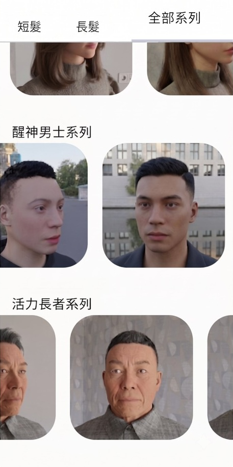
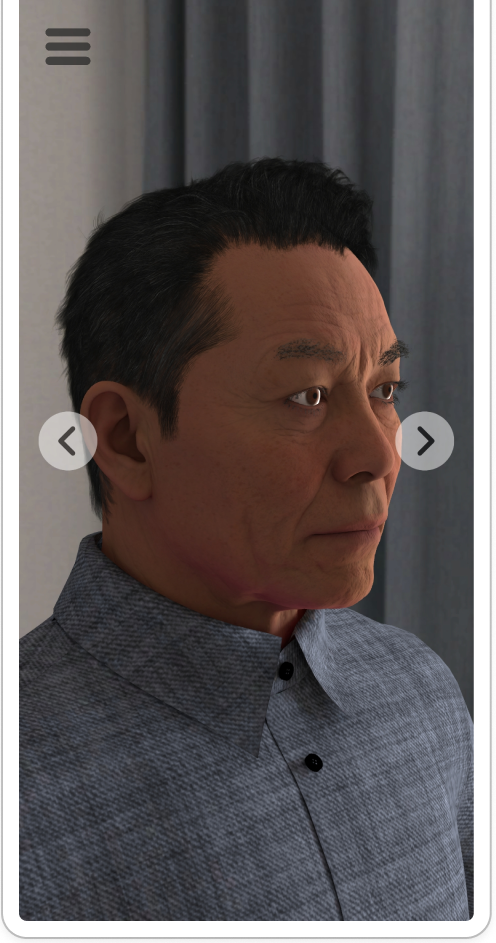

Designed and built a bespoke 360 hairstyle viewer application in Unity C# deployed on Android tablets with Google Cloud Storage asset streaming, resolving consultation ambiguity in a fast-turnaround salon.
Problem Discovery: Why 2D Catalog Photos Broke 4-Minute Salon Turnarounds
MRKE operated as a physical fast-turnaround haircut business serving 10 residential blocks. As co-founder, I formulated service pricing, evaluated unit economics, and set speed-to-quality benchmarks built around short chair cycles. Direct shop floor observation traced our recurring consultation bottleneck to static 2D catalog photos:
Flat 2D Photo
Static single angle with zero depth or back-of-head reference.
Head Shape
Cannot picture how a photo wraps personal skull proportions.
Crown Volume
Flat lighting hides silhouette height and layering depth.
Neckline Taper
Rear fade gradients remain invisible from the front.
4 to 6 Min Hesitation
Anxious verbal guesswork stalls chair turnaround.
User Research: What Customers Aged 6 to 70 Needed to Communicate
Floor observation across our neighborhood clientele revealed a cross-generational span from 6-year-old children to 70-year-old seniors. Mapping both groups side by side showed that opposite age extremes converged on the same interface need:
Children and Teens, Age 6 to 12+
Fluent with touchscreens, but lack styling vocabulary.
Struggle to request volume, layering, or fade tapers verbally.
Senior Residents, Up to Age 70
Need immediate visual clarity over menu navigation.
Small text labels and nested options cause hesitation.
Zero-Reading Interface
Consultation friction was a communication barrier, not customer indecision.
Prototype Trade-Offs: Why Curated 3D Presets Beat Sliders and WebGL
To resolve consultation ambiguity without slowing down store operations, I explored multiple concepts before arriving at the final software architecture:
Detailed length, volume, and fade sliders caused analysis paralysis for customers, frustrated stylists under a 30-second rush-hour target, and doubled consultation duration.
Budget station Android tablets faced strict GPU thermal limits and periodic network latency. Streaming models via WebGL risked frame drops and store service interruption.
Static multi-angle printouts could not provide continuous 360-degree rotation, and updating seasonal haircuts incurred high recurring printing costs.
Built a responsive Unity C# engine running locally on Android tablets with instant touch rotation, curated preset categories, and full-screen standing stylist touch ergonomics.
User Flow: What a Zero-Reading 4-Step Consultation Looks Like
I mapped consultation steps from greeting and chair handover to style selection, 360-degree rotation, and final cutting confirmation. To reduce cognitive overload for customers ranging from age 6 to 70, I structured the screen-to-screen interaction flow around minimal taps and minimal on-screen text:

Category Selection and Preset Loading
Visual Category Entry
High-contrast visual category thumbnails allow children and elderly customers up to age 70 to pick a hairstyle group immediately with a single tap, without reading dense text labels.
Curated 3D Preset Load
Tapping a portrait card loads the corresponding 3D head model directly into the viewport, eliminating multi-step configuration menus or granular sliders that slow down rush hours.

360 Touch Orbit and Consultation Alignment
Full-Screen 360 Touch Orbit
The entire screen acts as a forgiving touch surface where users swipe horizontally to rotate 360 degrees or tilt vertically to inspect crown volume and neckline tapers.
Shared Visual Confirmation
Seated customers and standing stylists align on the exact 3D angle together in under two minutes, transitioning straight into the haircut with zero typing and zero verbal ambiguity.
Usability Iteration: How Senior Testing and CCTV Logs Shaped Touch Ergonomics
I engineered the complete software lifecycle through pre-launch usability testing and continuous shop floor behavioral tracking:
- Pre-Launch Senior Usability Testing: Tested early versions of the 360 hairstyle viewer application with my grandmother before store launch, identifying touch hesitation points and iterating button sizes and placement for senior accessibility.
- CCTV Behavioral Observation and Damp-Hands Ergonomics: Deployed rapidly to shop tablets and combined daily stylist tracking logs with store CCTV behavioral observation to watch how customers naturally held and tapped the screen. Observing stylists operating with damp hands and customers reaching for the screen led me to expand touch targets to full-screen swipe rotation and added vertical camera pitch tilt to inspect crown volume and neckline tapers.
- Data-Driven Youth Preset Prioritization: Based on daily tracking data confirming high engagement among youth customers, I prioritized a dedicated library of 3D youth hairstyles, enabling young customers to point and rotate their preferred style with confidence.
Technical Implementation: Overcoming Mobile GPU Limits and Station Tablet Downtime
To maintain responsive 60 FPS interaction on budget Android tablets without taking stations offline for updates, I focused on client runtime optimization, memory reclamation, and background asset streaming:
- Interactive 3D Client Runtime (Unity C#): Custom touch viewer built with optimized camera orbit controls, touch drag gestures, vertical pitch tilt, and preset model loading designed for low-power mobile GPUs.
- UI Toolkit and Sprite Atlas Rendering: Replaced legacy UI Canvas with UI Toolkit ListView and ScrollView paired with a unified Sprite Atlas. Packing 50 category and hairstyle sprites into a single atlas collapsed UI draw calls by 95 percent, maintaining a stable 60 FPS during nested list scrolling that was previously impossible with legacy Canvas layout re-batching.
- Pre-Baked Ray-Traced Surface Texturing: Pre-baked ray-traced lighting and surface properties into a single combined texture map on 3D head models rather than sampling separate diffuse, normal, and roughness maps. This eliminated multi-texture sampling bandwidth on mobile GPUs, sustaining runtime framerates over 60 FPS while preserving high visual fidelity.
- Explicit Addressables Memory Lifecycle: Engineered an explicit teardown protocol upon exiting the viewer. The manager releases all AsyncOperationHandles, unloads mesh and material asset locations, and clears tracking collections, enabling immediate native memory reclamation and eliminating garbage collection spikes on entry-level Android hardware.
- Locked Station Hardware (Android OS): Deployed to dedicated Android tablets mounted directly at haircutting stations, configured with locked kiosk parameters to prevent thermal throttling and accidental app exits during work hours.
- Over-the-Air Asset Delivery (Unity Addressables with Google Cloud Storage): Configured Unity Addressables to stream compressed 3D hairstyle asset bundles over the air from Google Cloud Storage buckets. New seasonal haircuts and styling collections loaded dynamically in the background without requiring application rebuilds, manual side-loading, or device downtime.
- Interaction and Journey Prototyping (Figma): Designed touch interaction flows, large touch target hitboxes for standing stylists with damp hands, and streamlined navigation paths for quick style confirmation.
Business Impact: What Changed Across Hundreds of Live Salon Consultations
Customers and stylists rotated 3D models 360 degrees before cutting, achieving confident alignment in under two minutes. Consultation ambiguity and discussion time fell approximately 35 percent across hundreds of live sessions.
The 360 hairstyle viewer application transformed indecisive consultations into confident agreements within seconds. Floor observation proved that the most enthusiastic users were youth customers, validating the decision to prioritize dedicated youth styles. The project confirmed that software built to solve frontline operational bottlenecks creates immediate commercial utility.
Software built for fast physical operations must prioritize immediate ergonomics over feature density. Early concepts explored rich customization controls, but stylists needed style confirmation within twenty seconds during rush hours. The simplest interface adopted consistently on the shop floor delivers far greater commercial value than feature-heavy software that interrupts the service rhythm.